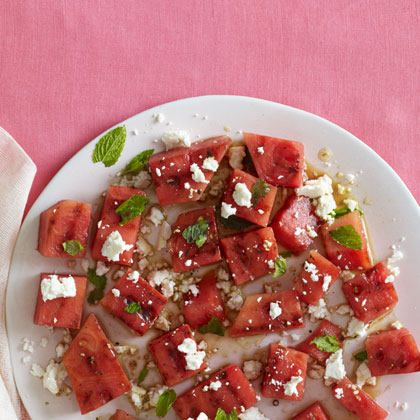

Grilled Watermelon Salad
Description
Your search for the perfect summer side is over—grilled watermelon salad topped with feta and mint balances sweetness and saltiness, making it an excellent complement to a cookout or backyard barbecue. The right amounts of balsamic vinegar and salt work with a little char to make watermelon sing in a completely new way, while olive oil and black pepper tie it all together. To switch things up, try goat cheese instead of feta or serve this atop some fresh arugula, mixed greens, or your favorite salad blend.

Ingredients
- 1 small watermelon (about 6 pounds), cut into 1-inch-thick rounds (lay melon on its side, and cut through rind and flesh with a sharp knife)
- ½ cup small mint leaves, torn
- 2 ounces feta cheese, crumbled into large chunks
- 1 tablespoon olive oil
- 1 tablespoon balsamic vinegar
- ¼ teaspoon sea salt
- ¼ teaspoon black pepper
Steps
- Heat a grill or grill pan over high heat until very hot. Two at a time, grill watermelon rounds, turning once, until charred (about 2-3 minutes per side). Transfer watermelon to a cutting board and remove rind; cut rounds into wedges.
- Arrange watermelon on a serving platter; sprinkle with mint and feta. Drizzle with olive oil and vinegar, then sprinkle with salt and pepper.